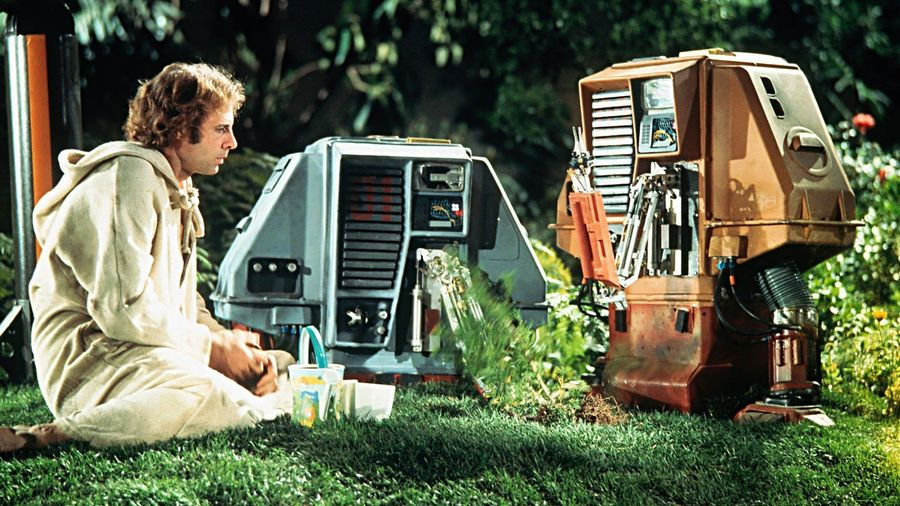
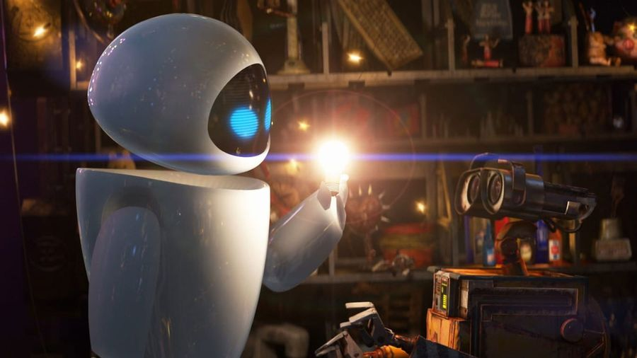

Douglas Trumbull had previously brought his VFX experience to film on such groundbreaking classics
a ruined Earth.
But when his ship is ordered to destroy the vegetation and return, Lowell mutinies and continues to
tend his foliage with the help of three memorable robo-assistants. It's by turns dramatic, quiet,
and reflective, an environmental warning that refrains from throwing its message in your face.
|
 |
If its premise sounds like a lost Michael Bay movie – criminals on a spaceship are hurtling into a
black hole! – Claire Denis' meditative science fiction movie is anything but, more in keeping with
the sharp-edged existentialist sci-fi of the 1970s. Robert Pattinson's Monte is one of a group of
prisoners who are effectively used as experimental subjects by Juliette Binoche's scientist. Dark,
moody and occasionally very violent, it's a psychological trip into the void, drenched in palpable
dread, with unsettling eroticism, nightmarish abstract imagery, and excellent, thoughtful
performances, particularly the ever-great Pattinson. Deep, dark, grown-up sci-fi that eschews outer
space action for intellectual and emotional challenge.
|
|
Bong Joon Ho's high-concept satire finally has the wide UK release it long deserved. Based on French
post-apocalyptic graphic novel Le Transperceneige, Snowpiercer's unique futuristic satire finds the
remnants of humanity crammed onto a train hurtling around the surface of a deep-frozen Earth, its
carriages containing a stratified society of haves and have-nots. Chris Evans is Curtis, one of the
poor schlubs in the tail section, ready to overthrow the system and fight back against the likes of
Tilda Swinton's outrageous Thatcher-alike Mason. As ever with Director Bong's work, it's a real
genre mash-up, with great action sequences and an idiosyncratic wit – but in addressing real-world
class issues through a fanciful not-so-far-future vision, it's the Korean auteur at his most sci-fi.
Just don't expect it to show up in a Mother And Baby screening any time soon.
|
|
Most sci-fi films look to the cosmos for signs of new life. Trust James Cameron, then – long before
Avatar – to look to the other inky-black instead, the mysterious ocean depths. With its sub-aquatic
entities (rendered with then-cutting-edge VFX that still looks good today) and a Jules Verne-ian
sense of deep-sea exploration, The Abyss feels distinct from the usual space-bound sci-fi. At the
heart of it is a team of expert divers who are hired to look for a missing nuclear submarine and
find something much more fascinating. Cameron's love of diving and his environmental side are on
full display here, laying the groundwork for much of what he's gone on to since – from the
waterworks of Titanic, to Avatar's bioluminescent planet, and the long-promised oceans of Pandora in
the upcoming Avatar sequels. It didn't have the box office impact of Cameron's big-hitters, but it's
still worth submerging yourself into.
|
|
Proving that ideas-driven sci-fi could thrive without a blockbuster budget, Richard Kelly's
distinctive indie debut plays with time and malleable reality as he puts Jake Gyllenhaal's depressed
high schooler through the wringer. With its time-looping narrative, suburban wormhole, and
apocalyptic visions of a glowy-eyed bunny-man, Kelly fuses none-more-sci-fi elements into a low-key
character drama, with head-scratching talking points and a killer soundtrack that made it a total
cult hit. Trippy, atmospheric, and boasting the impressive screen arrival of Gyllenhaal, Donnie
Darko leaves you wanting more – just, don't go tracking down the odd non-Kelly sequel, S. Darko.
|
|
Team Pixar was already on a golden streak, and then Wall-E arrived – the brainchild of veteran
creative type Andrew Stanton, a futuristic satire about how we treat the planet and each other, but,
you know, for kids. It was a risk that paid off beautifully, beginning as a near-silent film on the
bleak, trash-filled remains of Earth before blasting into an intergalactic adventure to save the
last remaining piece of viable plant life. Wall-E's stark opening astonishes, and it doesn't pull
its punches when it comes to dire eco-warnings, and skewering humanity's recklessly consumptive
consumerist ways. Wall-E's story goes straight for the heartstrings too with a swooning
robo-romance, musical sequences and a still-pertinent message for all of us, delivered in digestible
form.>
|
 |